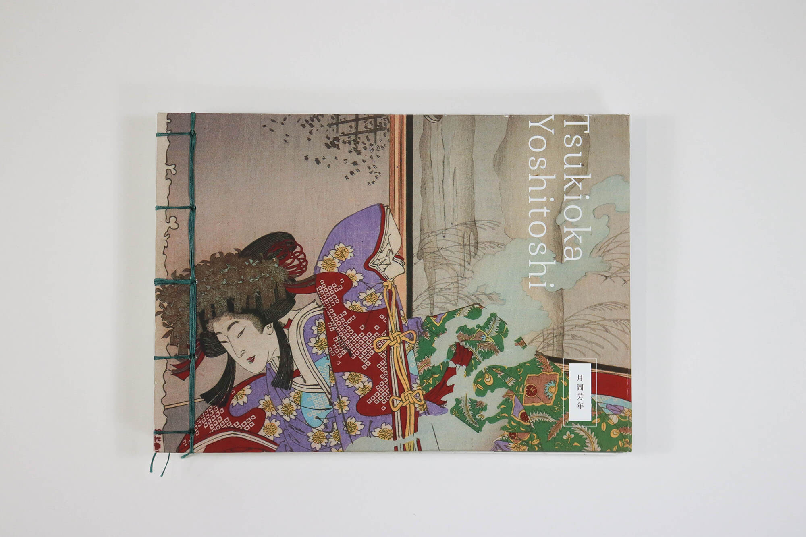
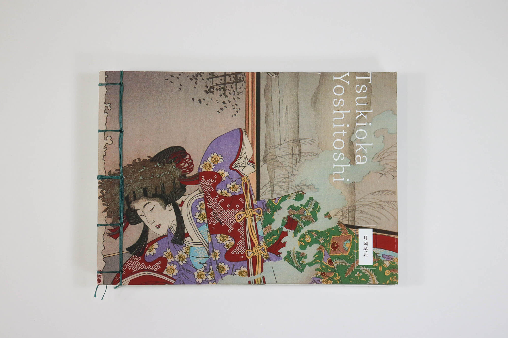

publication design
\ book binding
Adobe Illustrator
\ Adobe Photoshop
Tsukioka Yoshitoshi was one of the last great masters of Japanese woodblock printmaking (ukiyo-e) from the Edo time period. During the earlier half of his career, Yoshitoshi was most known for works with graphic depictions of violence and death, perhaps mirroring Japanese society at that time. With a variety of subjects, Yoshitoshi’s large body of works reflected many aspects of a traditional Japan transitioning to a modern era of mass printing technology.
To honor Yoshitoshi’s interest in the loss of culture and tradition, I wanted this artist catalog to be as traditional as possible, with a combination of Japanese and Coptic binding techniques. The layouts are simple in order to highlight Yoshitoshi’s complex and vibrant works. Furthermore, because of the heavy nature of the subjects that Yoshitoshi was portraying, white space is used generously throughout the book to give viewers some breathing room between each print.
 



{kind=link}
{kind=link}